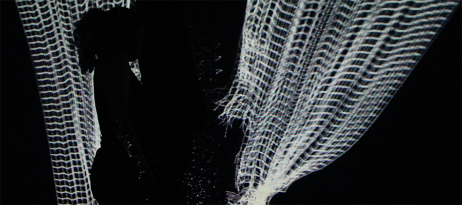

"GEometría Absoluta" - interactive dance performance.
GEA was a part of dance and technology workshops supported by Ministry of Education and Culture and presented in Maldonado, San Jose de Mayo, Rocha and Montevideo between August and October 2015. As an independent piece, it was presented in Montevideo in Laboratorio de Lenguajes Transversales and in the festival of art and technology Festival Equinoccio 2015. This piece was developed in collaboration with a dancer and choreographer Ximena Castillo. The video documentation of the piece can be found on Vimeo.
This piece we explored possible connections that can be made between geometry and the human body. We looked for the way to map body parameters into dynamic values used for the rendering of geometrical forms. Our goal was to map living body into the language of regular forms and formulas.